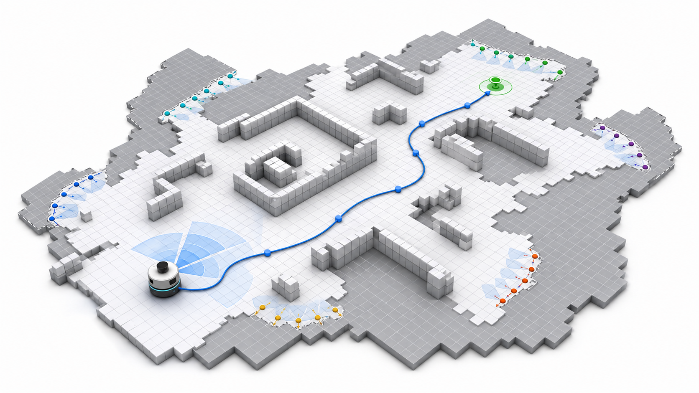

Featured project · 2025–Present
Ariadne2: Reinforcement Learning for Single-Robot Autonomous Exploration
A learning-based exploration system for selecting informative frontier viewpoints in unknown occupancy-grid environments while respecting low-level motion constraints.

Project overview
Learning to decide where the robot should explore next.
Ariadne2 formulates autonomous exploration as a graph-structured sequential decision problem over dynamic frontier viewpoints. The policy combines frontier clustering, Gaussian viewpoint proposal, Transformer encoding, pointer-style action selection, and A*-constrained execution.
Training uses Soft Actor-Critic with expert-aligned rewards and a Ray-based distributed rollout pipeline. The result is a planner that connects high-level information gain with feasible robot motion in the current map.
Exploration rollouts
A few sample trajectories from the project.
The animations are representative visualizations from the current experiment folder.